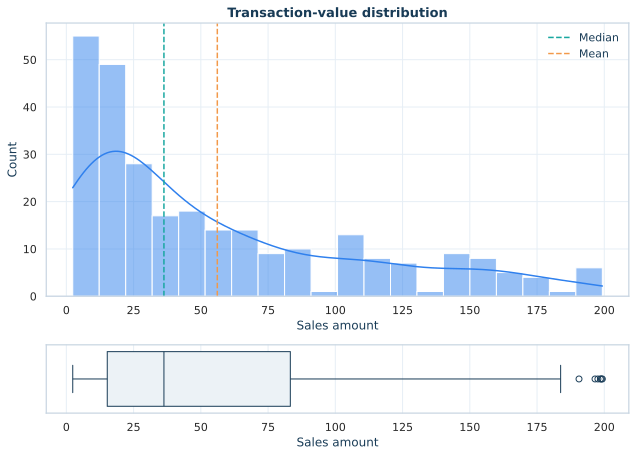

01
A right-skewed transaction distribution.
The mean transaction value is 56.13, while the median is 36.28. A smaller group of high-value purchases pulls the mean upward, so the median better represents a typical transaction.
IQR upper fence185.366 high-value observations · 7.6% of sales
Interpretation: the six observations were retained because no available field indicates that they are data-entry errors.
